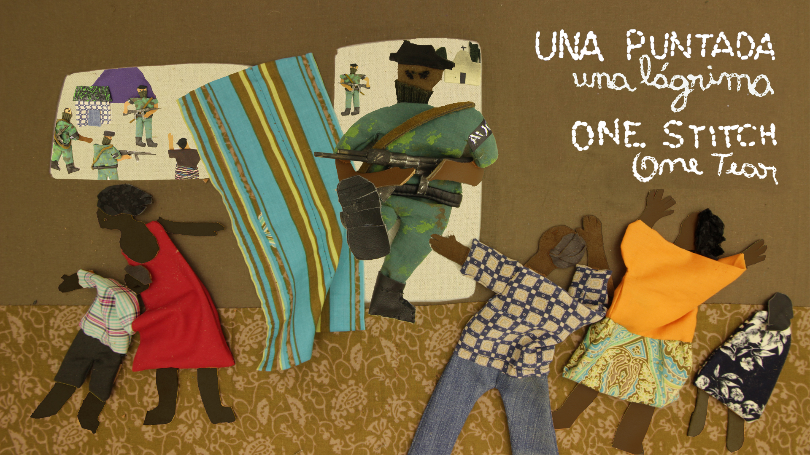

Una puntada, una lágrima

En el monte colombiano, en medio de una guerra entre paramilitares y guerrilleros, el pueblo inocente enmudece ante el miedo. Una tela es desplegada por las manos de tres mujeres tejedoras. Sus voces relatan las experiencias y habitan el tapiz para alcanzar la paz.
Dirección: Carlos Castro Macea (Col.) e Isabel Macias (Arg.)
Producción: Romina Savary (Arg.) y Carlos Castro Macea.
Guion: Luz Márquez y Valentina Cayetano Kelly
Animación: Isabel Macias
Target: +13
Duración estimada: 54´ - 70´
Técnica de animación: Stop motion con fibras textiles.
Estado actual del proyecto: Desarrollo
Link a Teaser